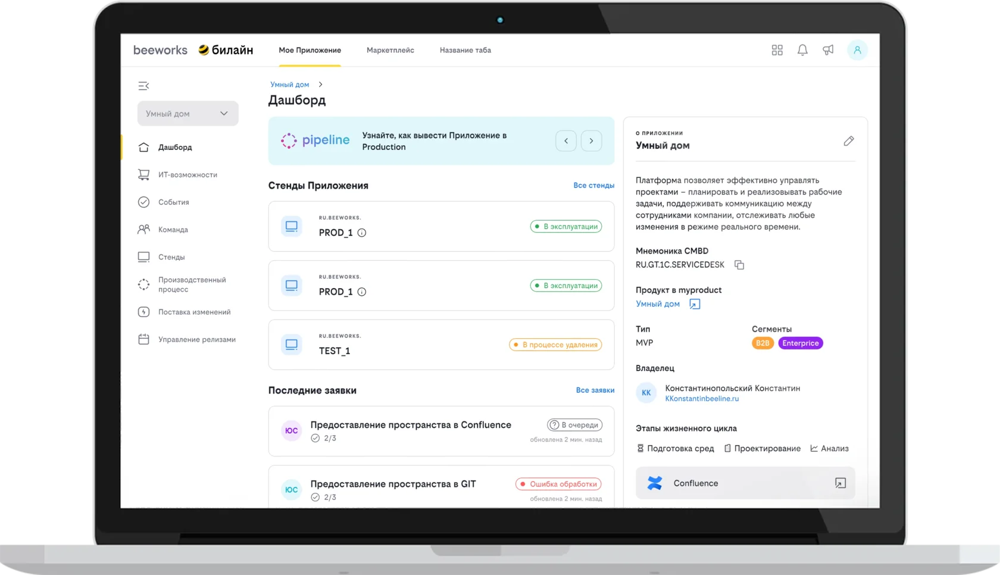
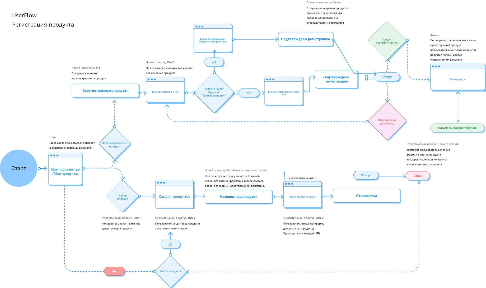
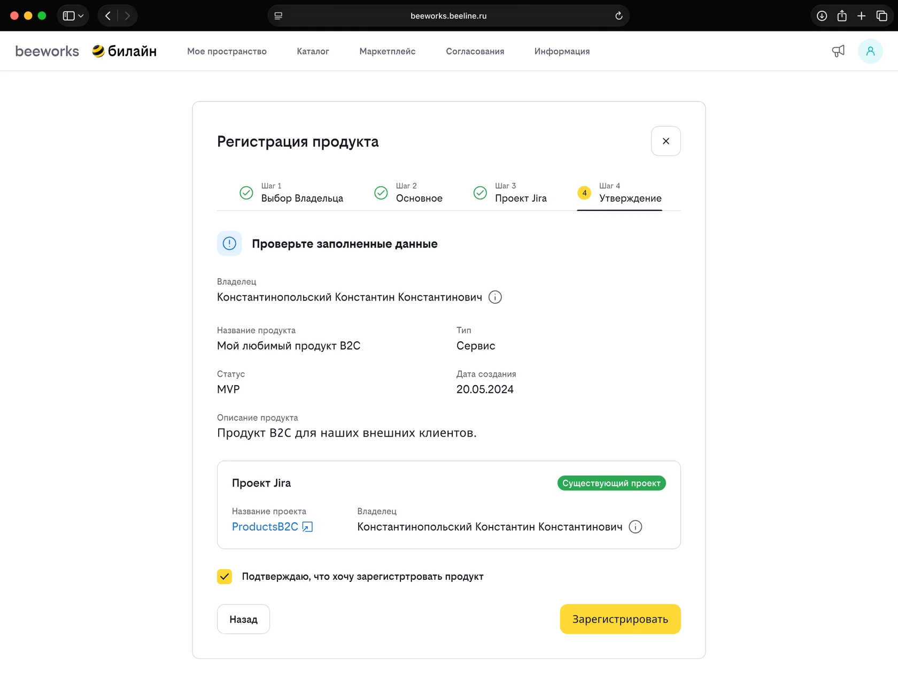
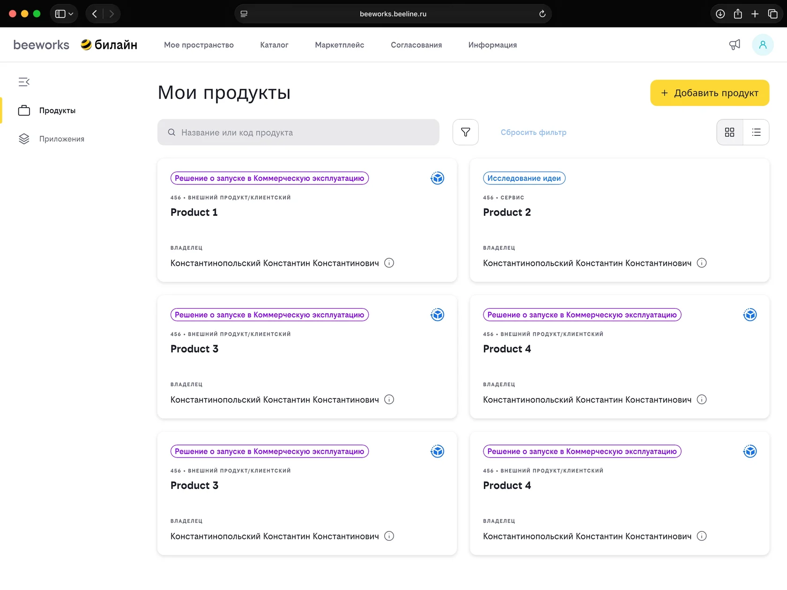
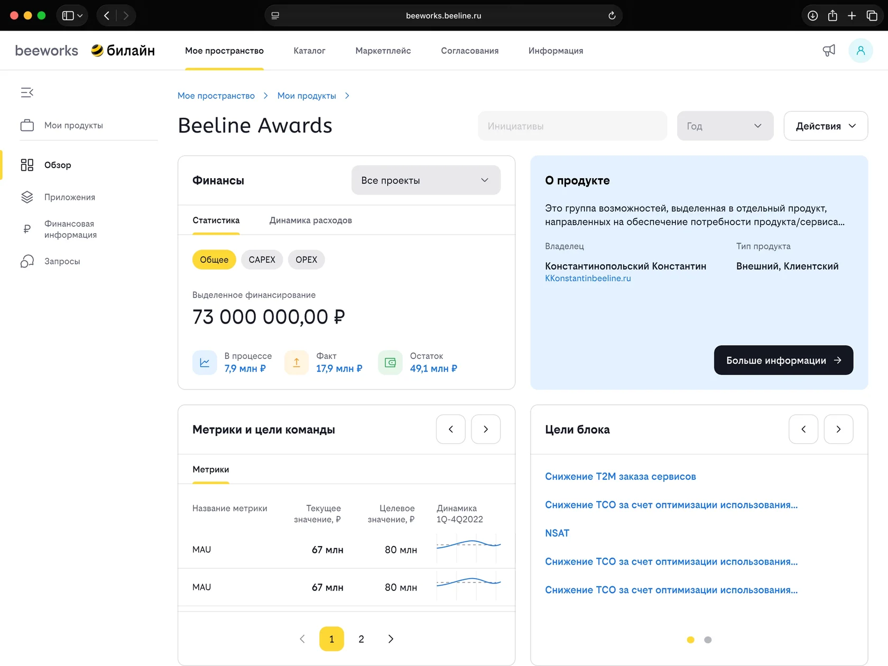
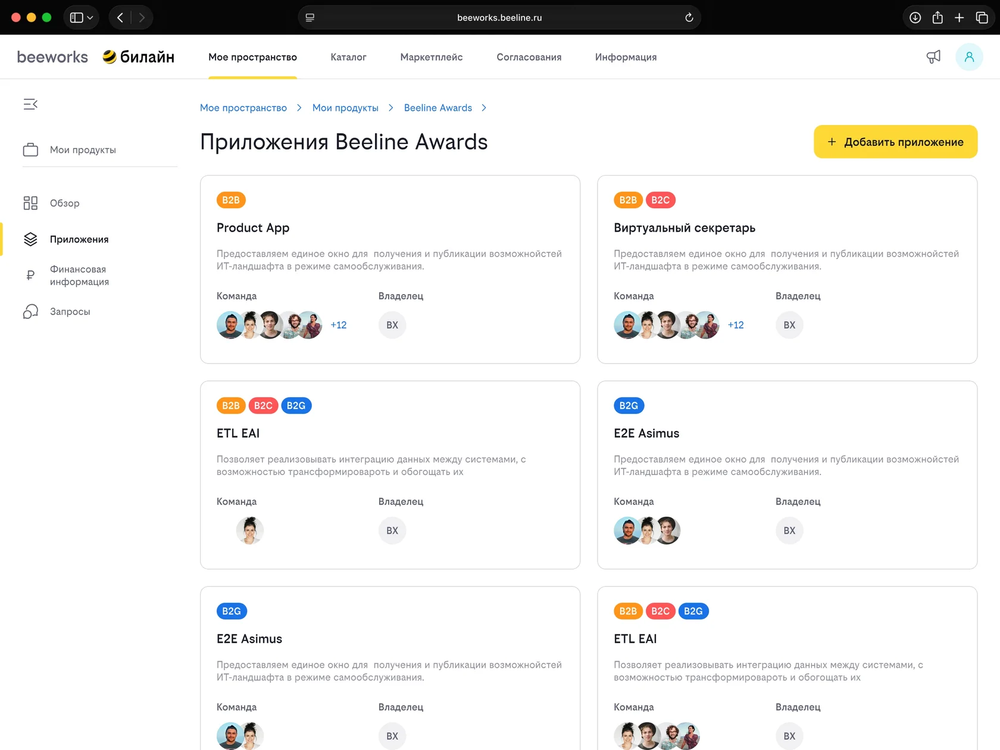
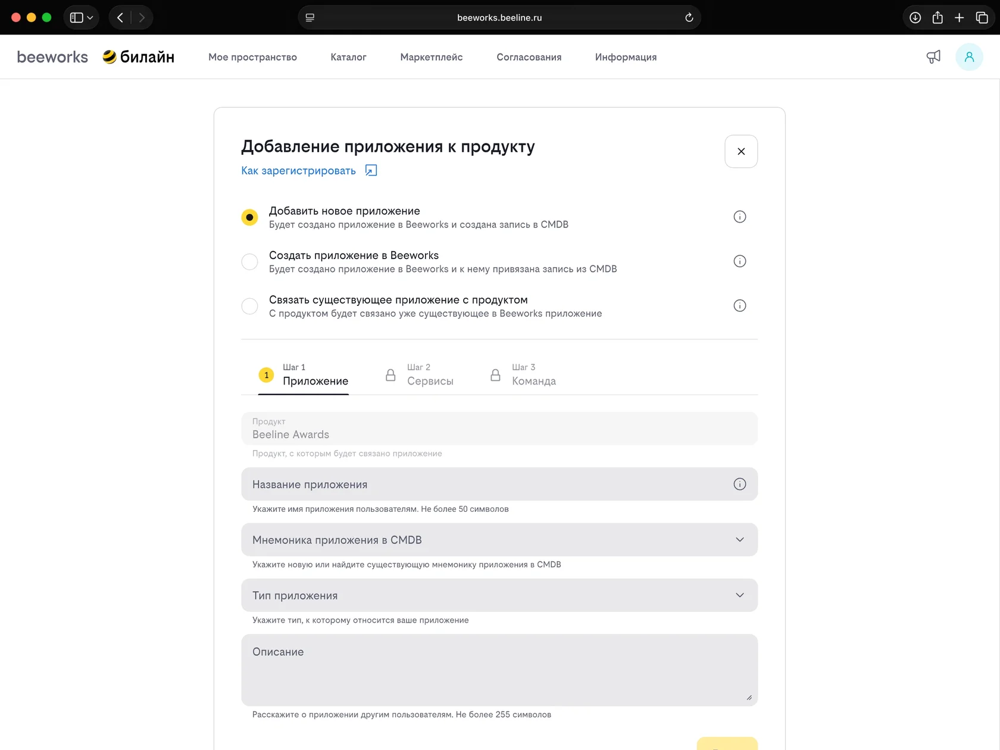
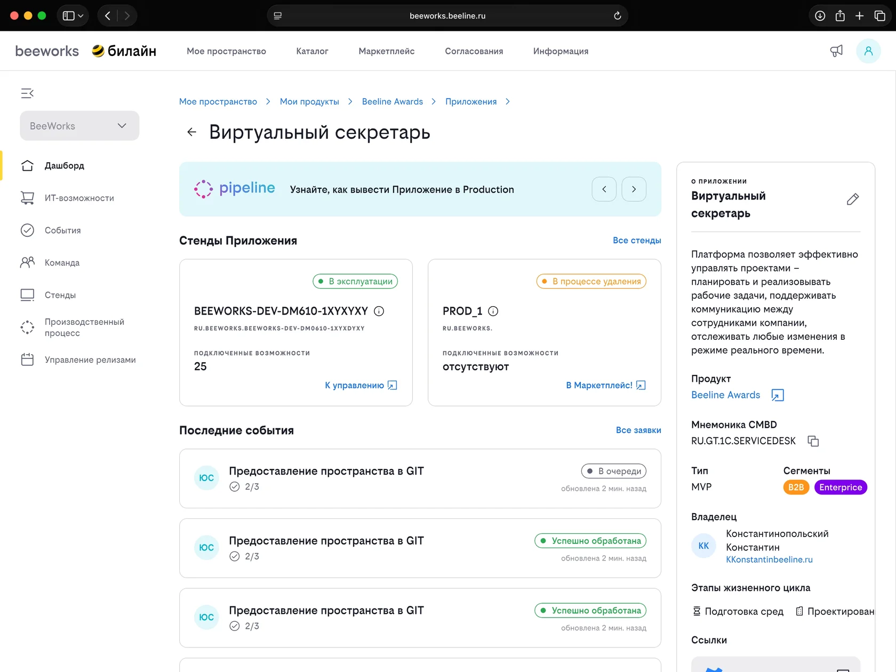

Вдвое увеличили число пользователей В2В платформы
Роль: Старший Product Designer
Discovery • UX • UI • Delivery • Product Growth
Ключевая платформа В2В сектора Билайн. Витрина инструментов и сервисов для продуктовых команд.

Достижения проекта
Задача
Объединили два внутренних сервиса в единый сценарий: теперь любая продуктовая команда компании может зарегистрировать продукт, получить бюджет для него, собрать команду для разработки приложения и подключить необходимую инфраструктуру, не переключаясь между системами.
Проблема
- Сложный, разделенный на две платформы пользовательский путь продуктовых команд при регистрации продукта и приложений
- Дублирование функциональности и данных
- Большое количество вопросов в адрес команды сопровождения – как следствие неинтуитивного пути
- Как итог – медленный запуск новых продуктов
Discovery
Чтобы понять, где возникают основные сложности, я провел интервью с пользователями – представителями продуктовых команд, составил граф работ по процессу регистрации продуктов и приложений, провел анализ проблем по текущему флоу и сформировал ключевые инсайты исследования.

Ключевые инсайты исследования
- Пользователи воспринимают запуск продукта как единый процесс. Они не разделяют регистрацию, согласование, получение бюджета и подключение инфраструктуры на разные сервисы и ожидают пройти весь путь в одном месте.
- Пользователям не хватает прозрачности процесса. Было сложно понять, на каком этапе находится продукт, что уже выполнено и какие действия необходимо выполнить дальше.
- Переключение между двумя платформами приводит к потере контекста. После перехода пользователям приходилось заново разбираться в процессе и повторять уже выполненные действия.
- Команда сопровождения перегружена из-за недостатков пользовательского сценария. Большое количество вопросов было связано не со сложностью процесса, а с качеством объяснения его пользователям.
- Повторный ввод данных замедляет работу и вызывает раздражение. Информация о продукте дублировалась в разных системах, увеличивая вероятность ошибок.
- Разрозненный пользовательский путь замедлял запуск новых продуктов. Чем больше ручных действий, переходов между сервисами и неопределенности, тем дольше команды проходили путь от идеи до начала разработки.
Решение
Объединить два продукта в единую точку входа.
- показать пользователю понятную архитектуру продуктов и приложений
- дать возможность на одной платформе зарегистрировать продукт и приложение
- обеспечить жизненный цикл продукта: согласование на комиссии, бюджетирование и так далее
- собрать проектную команду для продукта и приложения
- подключить необходимую инфраструктуру для приложения
Проектирование UX

Проверенный результат
Регистрация продукта → Мое пространство → Выбранный продукт → Приложения выбранного продукта → Добавление приложения к продукту → Дашборд добавленного приложения.






Чему научил меня этот опыт
Разрозненный процесс всегда дороже, чем кажется: пользователи платят за него временем, а команда сопровождения – объемом обращений. Объединение сценария в одну точку входа дало рост вдвое без единой новой функции.